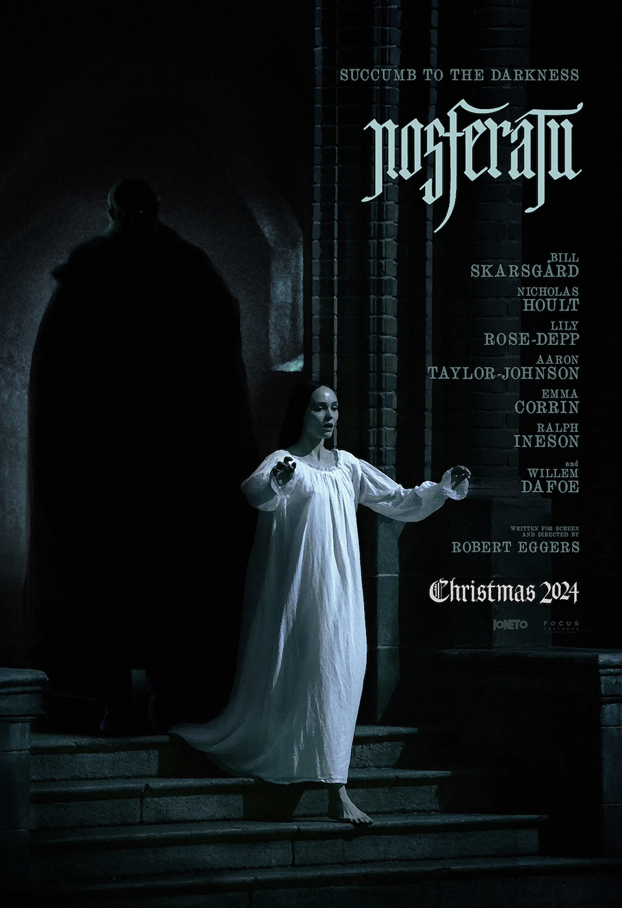
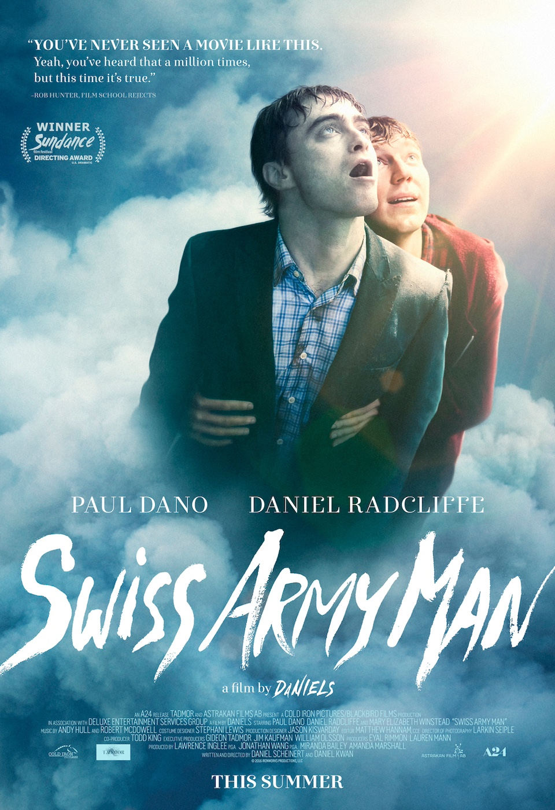
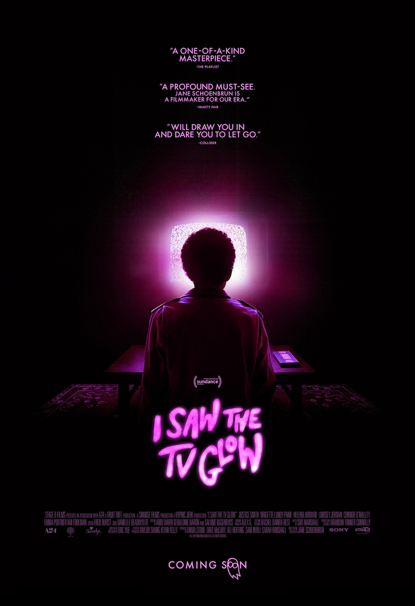
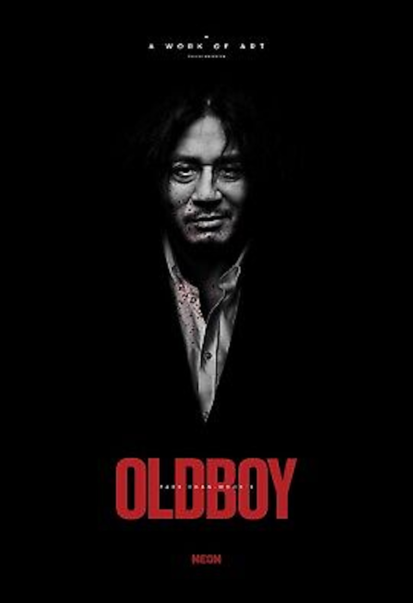
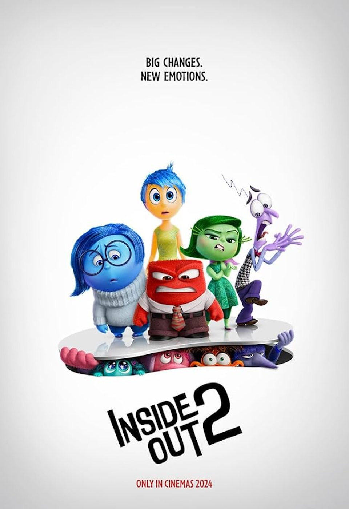
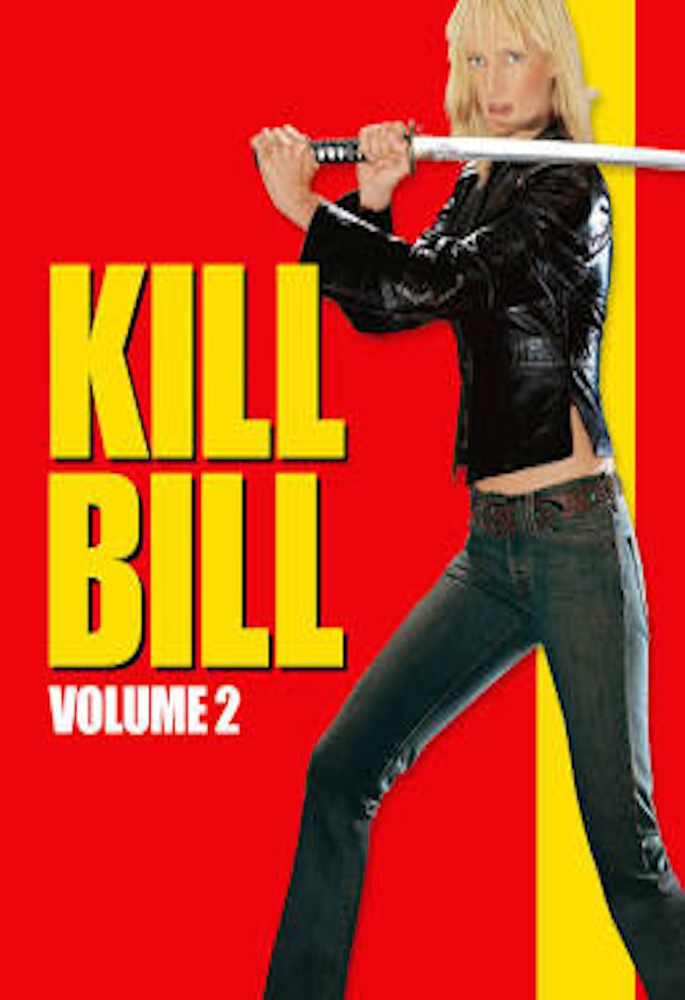

Nosferatu (2024)
Even though this movie is not out yet, I've seen great reviews about it already! It's a remake of the Noseratu (1922) film about Dracula

Swiss Army Man
I don't know much about this movie but I know some people that really like it and I'm interested in watching it

I Saw the TV Glow
I've heard great things about this movie and some people say its one of their favorite A24 films

Oldboy
A lot of people like this movie and have rated it highly. The the trailer looks really interesting and I'm looking forward to watching it

Inside Out 2
I didn't get to watch it when it came out but a lot of people said they liked it

Kill Bill 2
I've already seen this movie but I want to watch it again